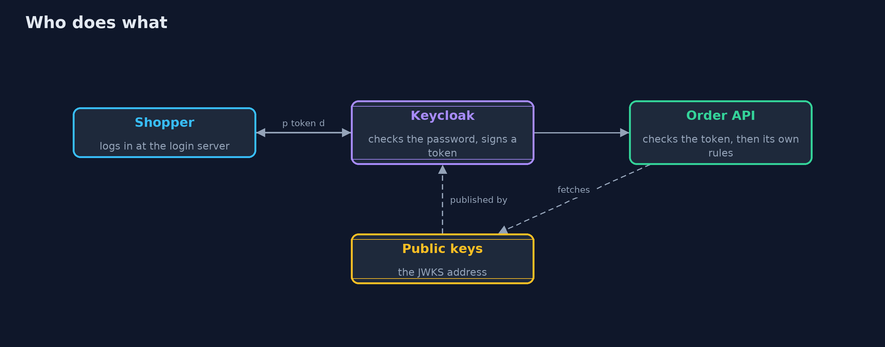
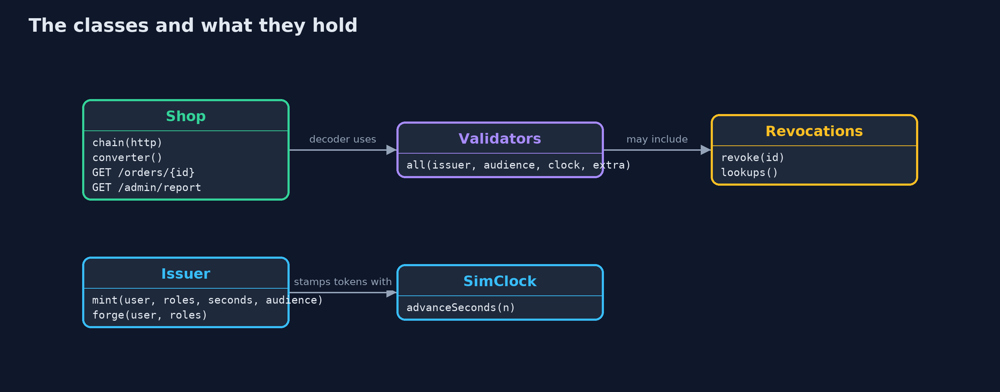
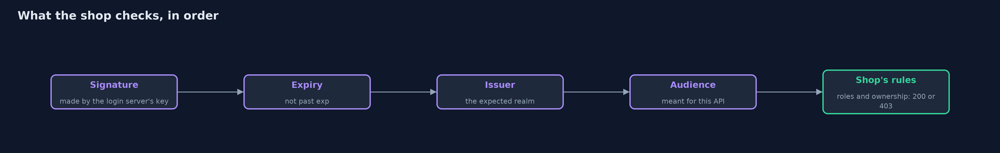
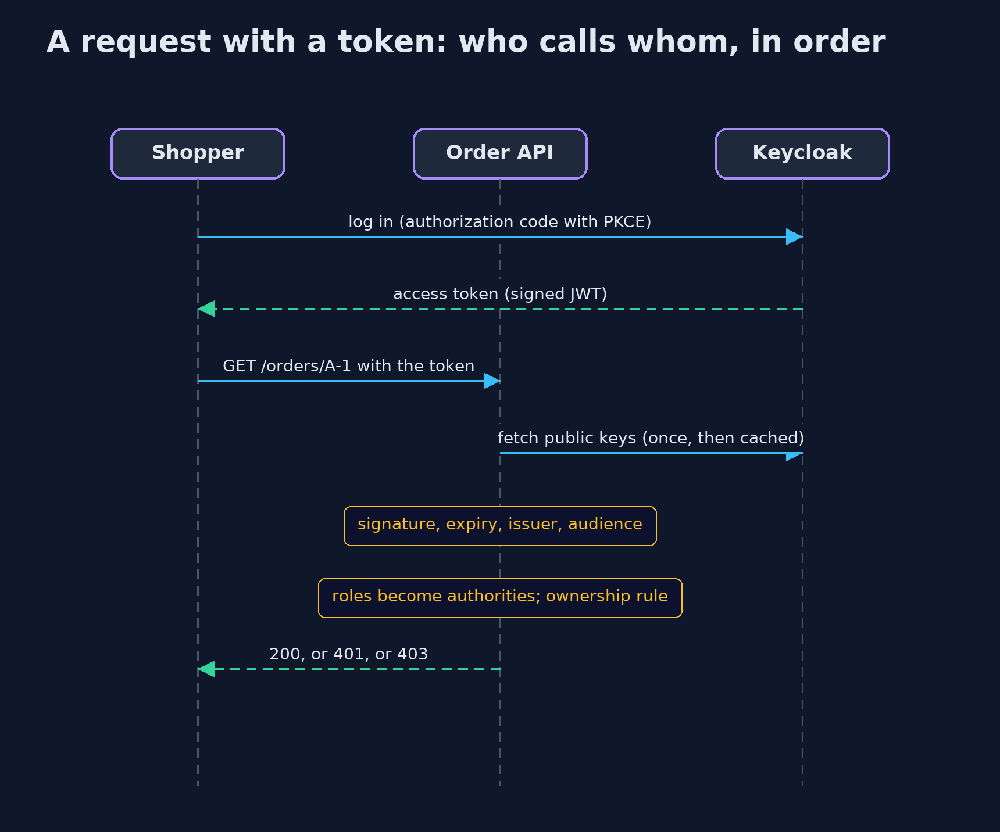

Authentication vs Authorization with Keycloak
src/main/java/com/jk/explore/security/authkeycloak/
├── Issuer.java A stand-in for the login server in the demo: it signs tokens in the shape Keycloak produces (issuer, audience, authorized party, realm_access.roles, expiry)
├── KeycloakDemo.java Runs the online store story in five numbered acts against a real Spring Boot resource server on the loopback interface
├── Revocations.java A list of token ids that were revoked
├── Running.java The order API started on a free loopback port with the given token decoder
├── Shop.java The online store's order API as an OAuth 2 resource server: it holds no passwords and trusts only tokens the login server signed
├── SimClock.java A clock that only moves when told to, so token lifetimes can be shown without waiting
└── Validators.java The checks a resource server makes after the signature: expiry, issuer, audience, and optionally a revocation list
With Keycloak the shop stops handling passwords: a login server proves who is asking and signs a token, and the shop only checks the token's signature, expiry, issuer and audience, and then its own rules, but the roles in the token are a copy that can be stale.
The plain version of this lesson kept passwords inside the shop. Most real shops do not. A separate login server checks the password, perhaps a second factor, and hands back a signed token. The shop then holds no passwords at all: it receives a token with each request and decides whether to trust it. Keycloak is the best-known open-source login server. It speaks OAuth 2 and OpenID Connect, the standards behind "sign in with ...". Its tokens are JWTs: three parts, a header, claims such as who the user is, which roles they have and when the token expires, and a signature.
A shop that accepts tokens is called a resource server. It checks the signature with the login server's public keys, then the expiry, the issuer (who made the token) and the audience (which API the token is for). Only then do its own rules run: no token means 401, a valid token without the right role means 403. The demo runs the real Spring Boot resource server against a stand-in login server, and the integration tests repeat the key checks against a real Keycloak.
The idea in everyday terms
Think of a theatre. The box office checks your identity and sells you a ticket. The doors do not know you; they check that the ticket is real, that it is for tonight, that it is for this theatre and not the one next door, and which seats it covers. If the box office moves you to a cheaper seat after you bought the ticket, the door still lets you in to the old seat until the ticket's date passes. That is the stale-role problem.
The scenario
An online store's order API trusts a login server. Shoppers, support staff, an admin and a nightly job all call it with tokens. The demo shows what happens with no token, a forged token, an expired token, the wrong issuer or audience, a role that is taken away while the token is alive, and a token that is revoked.
Run
./gradlew run
The demo tells the story in 5 acts, each printing exact numbers that the tests check:
| Act | What it shows |
|---|---|
| 1. No login in the shop, only tokens | No token, garbage and a token signed with another key all get 401; a signed token works; 301 seconds later the same token is expired and refused, with no call to the login server. |
| 2. Who is it, and what may they do | The roles in realm_access.roles become authorities; Ana reads her own order and gets 403 for Ben's; support reads it; only admin opens the sales report. |
| 3. A real signature is not enough | A correctly signed token from another issuer, and one meant for another API, are both refused; without an audience check any API's token would open this one. |
| 4. The roles in a token are a copy | An admin is demoted but the token already issued still opens the report until it expires; a new token carries the new roles; a short lifetime limits the stale window. |
| 5. Ending a token early, and the bill | A revocation list ends a token at once, but it is consulted on every request; without it the shop makes no call, and the login server becomes one more system to run. |
Test
./gradlew test
28 tests in DemoRunsTest, Keycloak, KeycloakIntegrationTest, RealmFileTest, TokenRulesTest. The default tests need only a JDK: the stand-in login server signs tokens with a random key and a simulated clock, so the demo prints only status codes and booleans, and the golden output is the same on every run. The integration tests (tagged docker) run the real Keycloak in Docker.
What the simulation got right, and what it left out
The demo runs a real Spring Boot server on the loopback interface, and the tokens come from a stand-in login server in the same process, signed with a random key that is never printed. A simulated clock moves token lifetimes forward
without waiting. The integration tests start the real Keycloak 26.8.1 in Docker with the realm in infra/shop-realm.json, log in through its login page with the authorization code flow and PKCE, and wait for a real token to expire.
Technologies and versions
Every version below is pinned in the project's build files and was the latest stable release when the project was built.
| Technology | Version | Used for |
|---|---|---|
| Java | 25 | the language and runtime; a Gradle toolchain finds or downloads the JDK |
| Gradle | 9.8.1 (wrapper) | build and run; nothing to install, the wrapper downloads it |
| org.springframework.boot:spring-boot-starter-webmvc | 4.1.1, set by spring-boot-dependencies | library the code uses |
| org.springframework.boot:spring-boot-starter-security | 4.1.1, set by spring-boot-dependencies | library the code uses |
| org.springframework.boot:spring-boot-starter-security-oauth2-resource-server | 4.1.1, set by spring-boot-dependencies | library the code uses |
| org.springframework.boot:spring-boot-starter-webmvc-test | 4.1.1, set by spring-boot-dependencies | library the code uses (tests only) |
| org.springframework.boot:spring-boot-starter-security-test | 4.1.1, set by spring-boot-dependencies | library the code uses (tests only) |
| org.springframework.boot:spring-boot-starter-security-oauth2-resource-server-test | 4.1.1, set by spring-boot-dependencies | library the code uses (tests only) |
| org.junit.jupiter:junit-jupiter | 6.1.3, set by junit-bom | JUnit 5: the tests (tests only) |
| org.junit.platform:junit-platform-launcher | 6.1.3, set by junit-bom | JUnit platform launcher, which Gradle needs to run the tests (tests only) |
| Keycloak | 26.8.1 | the real login server, run in Docker by the integration tests; the demo itself uses a stand-in that signs tokens in the same shape |
| Docker | any recent | runs the Keycloak container for the integration tests only |
| videokit | repository tool (tools/videokit) |
the narrated video and animation: Piper en_US-amy-medium, speed 0.8, longer pauses (the amy-slow voice) |
Learning Material
| Document | What it is for |
|---|---|
| Dependencies | what the framework and infrastructure are, and why they are here |
| Problem statement | the situation and what the project must show |
| Prerequisites | what you need to know first |
| Authentication vs Authorization with Keycloak, explained | the acts in prose |
| Session guide | a one-hour lesson with exercises |
| Animated walkthrough | the acts step by step, narrated |
| Threat model | what is protected, who could harm it, and how, using STRIDE |
| Spec | what this project must be true of |
| Expected output | the golden demo output every test and every port checks against |
The idea in one picture
The login server proves who the user is. The shop only checks what it is handed.

Where each piece sits
Validators are the shop's checks on a token; Shop holds the rules; Issuer and SimClock stand in for the login server and time.

How the data moves
Any failed check is a 401. Only a token that passes all of them reaches the shop's own rules, which can answer 403.

Who calls whom, in order

Video
video/authentication-vs-authorization-with-keycloak-explained.mp4 (with .m4a audio and .srt subtitles) is built by video/build_video.sh. Rendered media is not committed.
What it costs
- The login server is a new critical system. If it is down, nobody can log in, and if it is breached, every shop that trusts it is breached. It needs patching, backups and monitoring like the shop itself.
- Roles in a token are a copy. A role taken away in Keycloak still works in tokens already issued until they expire, so access tokens must be short.
- Ending a token early costs a lookup on every request. A revocation list or introspection call per request gives up the main benefit of tokens, which is checking them with no call.
- More moving parts to configure correctly. A missing audience mapper, a wildcard redirect URI or a long token lifetime each weaken the whole design, which is why the realm file is tested like code.
When this is too much
For one application with its own users, a framework's built-in login is simpler. A login server earns its place when several applications share logins, when staff sign in from a company directory, when second factors and account recovery must be handled in one place, or when a mobile app and a web app need the same identities.
Where you have already met this
- "Sign in with Google" and company single sign-on pages.
Authorization: Bearer ...headers in API documentation..well-known/openid-configurationandjwks.jsonURLs.- Tokens pasted into jwt.io, with
expandissclaims.
Where this sits
This project is the second in identity after authentication-vs-authorization-with-spring-security. It builds on authentication-vs-authorization and uses the 401 and 403 answers from there.